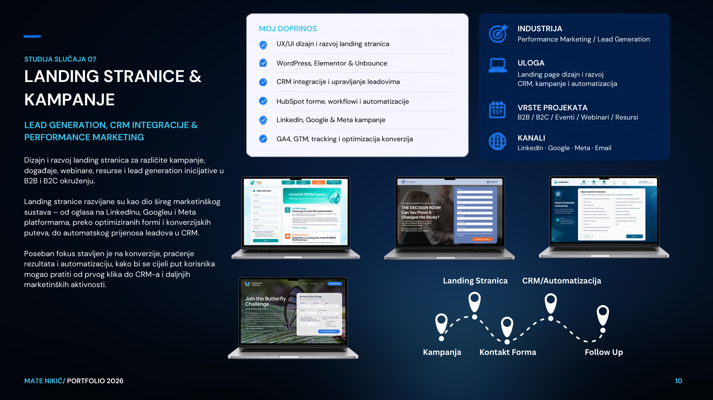

Studija slučaja / 07 · Performance marketing · Lead generation
Landing stranice & kampanje
Lead generation, CRM integracije i performance marketing
IndustrijaB2B / B2C
Moja ulogaCampaigns · Tracking · Automation
TrajanjeViše kampanja
UslugeMarketing & kampanje · CRM & automatizacija · Web development
Vrijednost projektaCijena na upit · placeholder
Napomena: financijski iznosi nisu objavljeni; prikaz cijene je placeholder za buduću doradu.

Prikaz projekta / vizualna prezentacija
01 / KONTEKST
S čim je projekt krenuo?
Dizajn i razvoj landing stranica za kampanje, događaje, webinare i resurse. Povezivanje oglasa, formi, CRM-a i automatizacije u mjerljiv korisnički put.
02 / CILJ I PRISTUP
Što je klijentu bilo važno?
Povezati kampanje, landing stranice, forme i CRM u mjerljiv korisnički put.
03 / MOJ DOPRINOS
Što sam konkretno napravio?
- UX/UI dizajn i razvoj landing stranica
- WordPress, Elementor & Unbounce
- CRM integracije i upravljanje leadovima
- HubSpot forme, workflowi i automatizacije
- LinkedIn, Google & Meta kampanje
- GA4, GTM, tracking i optimizacija konverzija
04 / RJEŠENJE
Kako sam pristupio rješenju?
Projekt obuhvaća sljedeće komponente: UX/UI dizajn i razvoj landing stranica, WordPress, Elementor & Unbounce, CRM integracije i upravljanje leadovima, HubSpot forme, workflowi i automatizacije.
05 / REZULTATI
Što je projekt donio?
Projekt pokazuje pristup i isporučene funkcionalnosti. Konkretne brojke dodat ću kada budu potvrđene.